Amy Dolata
Medical Student · Newcastle UniversitySecond-year medical student offering MMI interview coaching alongside GCSE and A-Level science and Spanish support.
2900UCAT
4/4Medicine Offers
A*AAAA-Levels & EPQ
Our tutors bring strong academic knowledge, teaching ability and a commitment to helping students make measurable progress.
Before becoming a Trojan tutor, every candidate completes a rigorous teaching and testing process. Profiles below are ready for your tutors' real photographs and biographies.
Second-year medical student offering MMI interview coaching alongside GCSE and A-Level science and Spanish support.
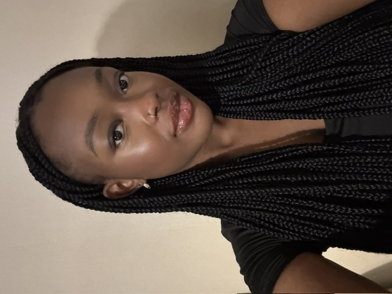
Medical student with nearly three years of tutoring experience, specialising in GCSE and A-Level Biology and Chemistry, personal statements and medicine interview preparation.
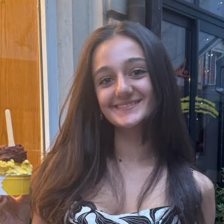
4th year Dental student supporting students with UCAT, dental interviews and dental applications.
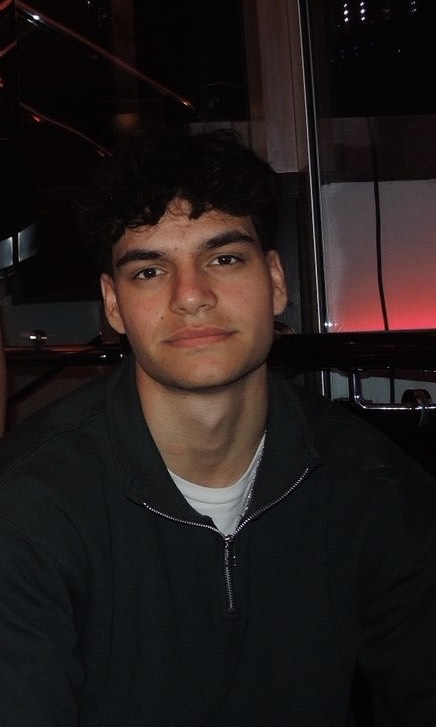
Second-year medical student with experience tutoring GCSE and A-Level sciences, plus a year of primary-school teaching support.
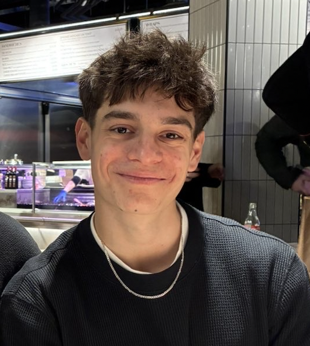
4th year medical student with over two years of tutoring experience across GCSE sciences and maths, UCAT and medical admissions.
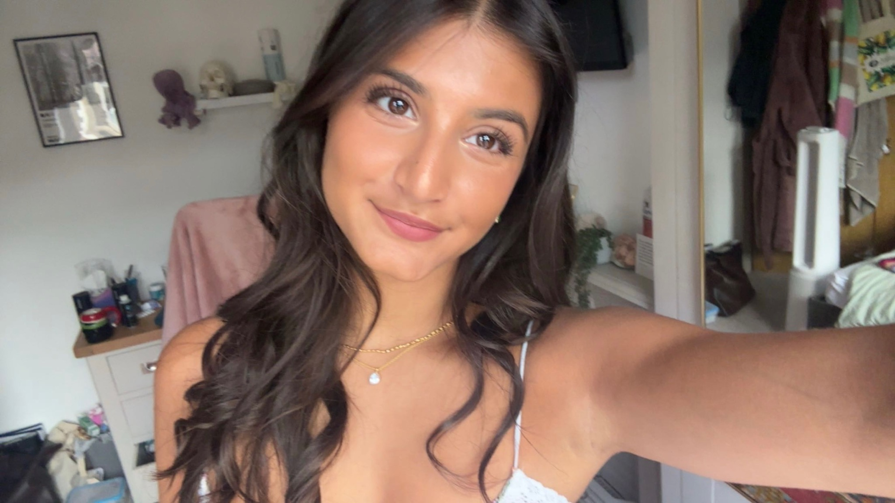
Dental student supporting GCSE Biology and prospective dental students with interview and application preparation.
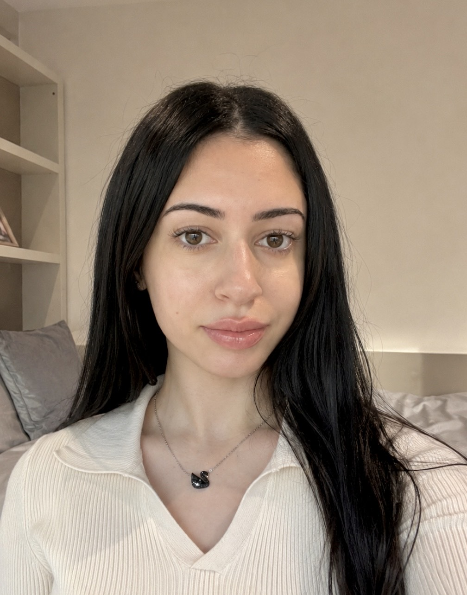
Pharmacy student offering GCSE support in Biology, Chemistry and Mathematics, with a focus on confidence, clear explanations and exam technique.
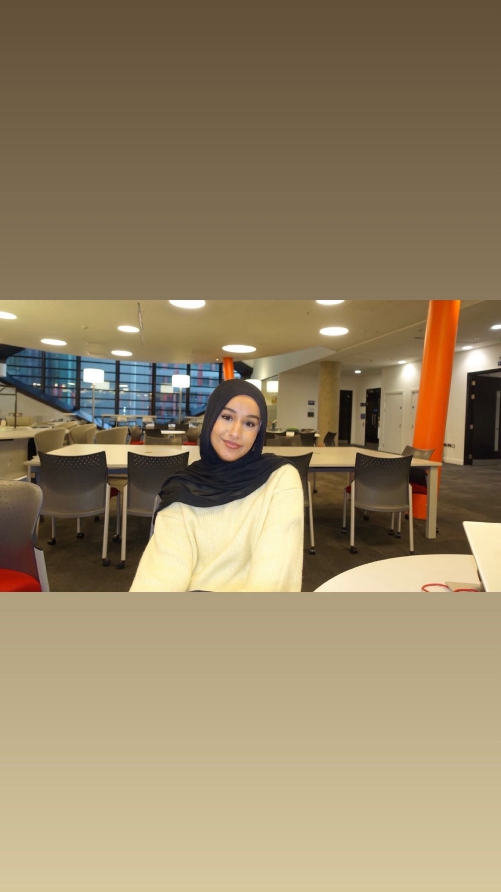
Second-year Accounting and Financial Management student offering supportive tutoring in Mathematics, Business and Sociology, with university-level Accounting and Finance support.
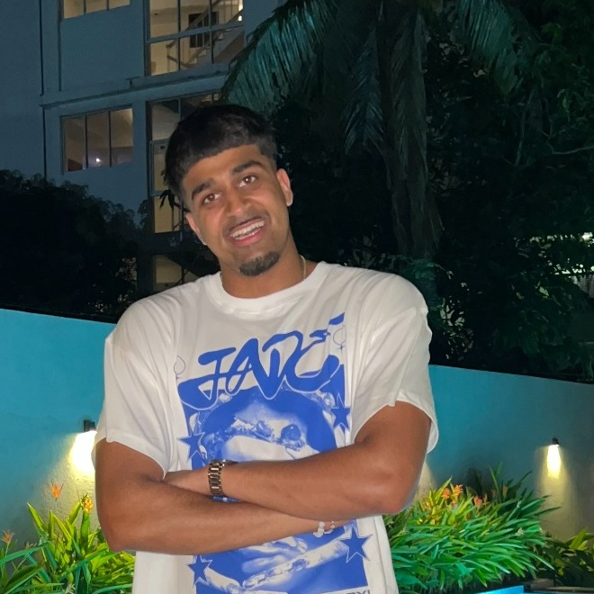
Experienced Biology, Chemistry and Maths tutor focused on exam technique, efficient methods and helping students turn difficult topics into confident marks.
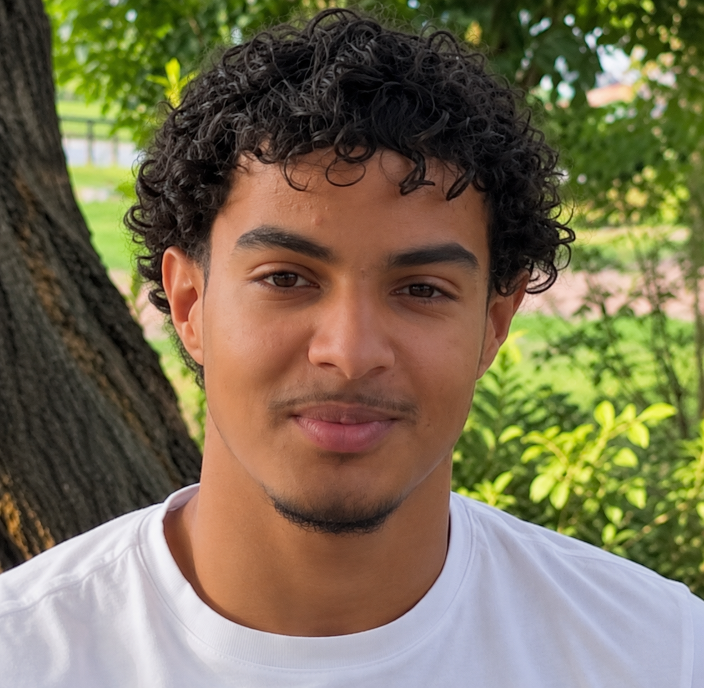
Pharmacy student specialising in GCSE and A-Level Biology, Chemistry and Physics, with a focus on clear explanations and personalised support.
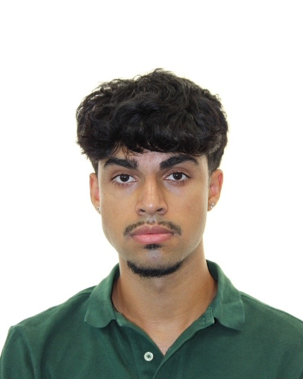
Medical student with 2+ years of tutoring experience from Year 7 through GCSE, A-Level and IB, specialising in Maths and the sciences.
Medical student with over three years of tutoring experience, specialising in GCSE Maths, Biology and Chemistry as well as UCAT preparation.
If you are academically strong, committed to high-quality teaching and want to help students overcome difficult topics, build confidence and make measurable progress, we would like to hear from you.
Become a Tutor →2nd Year Medical Student · Newcastle University
I’m currently in my second year at Newcastle University studying Medicine, and I would love to share my passion for the course and the admissions process with other students.
I have a particular interest in interview preparation. After receiving offers from all four of the medical schools I applied to, I’d love to help applicants build confidence, structure strong answers and prepare effectively for MMIs.
I’m also passionate about the sciences and would be very keen to support students with GCSE and A-Level preparation. Having studied Spanish for many years, and recently spent five weeks au pairing in Spain to improve my fluency, I’d also love to help students develop their Spanish.
Grade 8: Further Maths · Biology · Latin · English Literature
MMI & Medical Interview Preparation · GCSE and A-Level Biology & Chemistry · GCSE Sciences · Spanish
Medicine · Newcastle University · GCSE & A-Level Biology · Chemistry · Personal Statements · Interview Preparation
Hello, my name is Anu and I’m a current medical student at Newcastle University. I’ve been a tutor for nearly three years, with my expertise mainly in GCSE and A-Level Biology and Chemistry, as well as supporting prospective medical students with their personal statements and interview preparation.
I’m a very friendly and approachable person who is always happy to help others when needed, which is why I love tutoring. I aim to create a supportive environment where students feel comfortable asking questions and developing their confidence.
I entered Newcastle University through Clearing and I’m always happy to share my experience with prospective students who may benefit from guidance on alternative routes into university.
Friendly, approachable support · Building confidence · GCSE & A-Level exam preparation · Personal statement guidance · Medicine interview preparation.
GCSE & A-Level Biology · Chemistry · Medicine Personal Statements · Medicine Interview Preparation
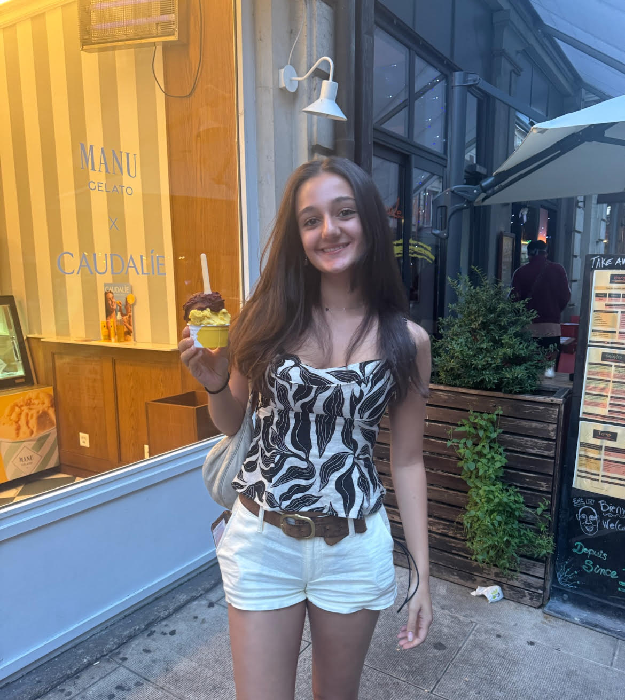
4th Year Dental Student · Cardiff University
Hi, I’m Emily! I’m a 4th year Dental student at Cardiff University. Through my tutoring, I aim to help students build confidence, think independently and communicate effectively.
The application process to dental school can be overwhelming, and I found that the advice and support from others made a significant difference in helping me feel more confident and prepared. I would love to make the same difference to someone else’s journey!
Outside dentistry, I enjoy volunteering with people with additional needs, inspiring my ambition to become a special care dentist. I also enjoy running, painting and exploring new coffee spots in my university and home cities!
Grade 9: Art, Biology, Chemistry, English Literature, English Language and Geography. Grade 8: Maths and RE.
Cardiff University · University of Bristol · University of Birmingham
2nd Year Medical Student · Newcastle University
I am a second-year medical student and have been tutoring GCSE and A-Level sciences for the past year. I have enjoyed every opportunity to teach, build strong relationships with my tutees and help students become more confident in their subjects.
I also volunteered at a primary school for a year, supporting Year 6 pupils as they prepared for their exams and future studies. This experience strengthened my enjoyment of teaching and gave me the opportunity to work with students from a wide range of backgrounds.
I am particularly interested in teaching the sciences at GCSE and A-Level, while also having experience supporting humanities subjects. I aim to make lessons approachable, engaging and tailored to each student's needs.
Leeds University · Biomedical Sciences
GCSE Biology, Chemistry and Physics · A-Level Biology and Sciences · Humanities support
4th Year Medical Student · Newcastle University
I am a 4th year medical student at Newcastle University and am currently in my second year of hospital placement.
I have been tutoring for over two years, beginning in April 2024, across GCSE Maths, Chemistry, Biology and Physics, as well as UCAT, interview and medical admissions preparation.
I really enjoy teaching students based on how they like to learn and adapting each lesson to the student's individual needs. My key priority is making sure students feel comfortable asking any questions they may have, so I can explain things in full detail and maximise their learning.
GCSE Maths, Biology, Chemistry and Physics · UCAT · Medical Interviews · Medical Admissions Preparation
4th Year Dentistry · Cardiff University · GCSE Biology · Dental Interviews & Applications
Hi, I’m Jesmir Drake and I’m a 4th year Dental student at Cardiff University! My goal is to encourage students to build confidence in themselves and broaden their communication skills to prepare for their interviews. Having experienced the application process myself, I know how beneficial extra support and preparation can be, and I would love to provide this to my tutees and help them succeed.
I also have a background in tutoring GCSE Biology and would be more than happy to apply my previous experience and skills to provide engaging and personalised support in this area. Outside of dentistry, I practise tennis and yoga, and I love exploring the Welsh countryside around Cardiff before grabbing a coffee or matcha at a local café.
GCSE Grade 9: English Literature, English Language, Biology, Chemistry, Physics, History, Geography and Drama.
GCSE Grade 8: Maths and French.
A-Levels: A*AA in English Literature, Biology and Chemistry respectively.
Dentistry: Cardiff University. Offers received from Cardiff University and the University of Liverpool.
Pharmacy · University of Manchester · Biology · Chemistry · Mathematics
Hi, I’m Ranya, currently studying Pharmacy at the University of Manchester. I have a particular interest in science, especially Biology and Chemistry, as well as Mathematics, and I’d love to help GCSE students become more confident in subjects they may initially find challenging.
I know that a different explanation or approach can completely change how a topic feels, so I aim to adapt sessions to each student and the way they learn best. Alongside subject knowledge, I’m keen to support students with revision, exam technique, study skills and their day-to-day schoolwork.
Clear explanations · Personalised learning · Building confidence · Revision · Exam technique · Study skills.
GCSE Biology · Chemistry · Mathematics
Accounting & Financial Management · University of Sheffield · Mathematics · Business · Sociology
Hi, I’m Reem, a Sheffield-based second-year Accounting and Financial Management student at the University of Sheffield. I have a strong interest in finance and really enjoy problem-solving and understanding how things work.
At A-Level, I studied Mathematics, Business and Sociology, achieving A*AA, with Sociology being my favourite subject. I’m happy to tutor these subjects and support students in building their confidence, understanding difficult topics and preparing effectively for exams.
I can also support university-level Accounting and Finance, sharing the knowledge and study techniques I’ve developed throughout my degree. I’m friendly, approachable and always happy to help.
Building confidence · Breaking down difficult topics · Problem-solving · Exam preparation · Effective study techniques.
Mathematics · Business · Sociology · University-level Accounting & Finance
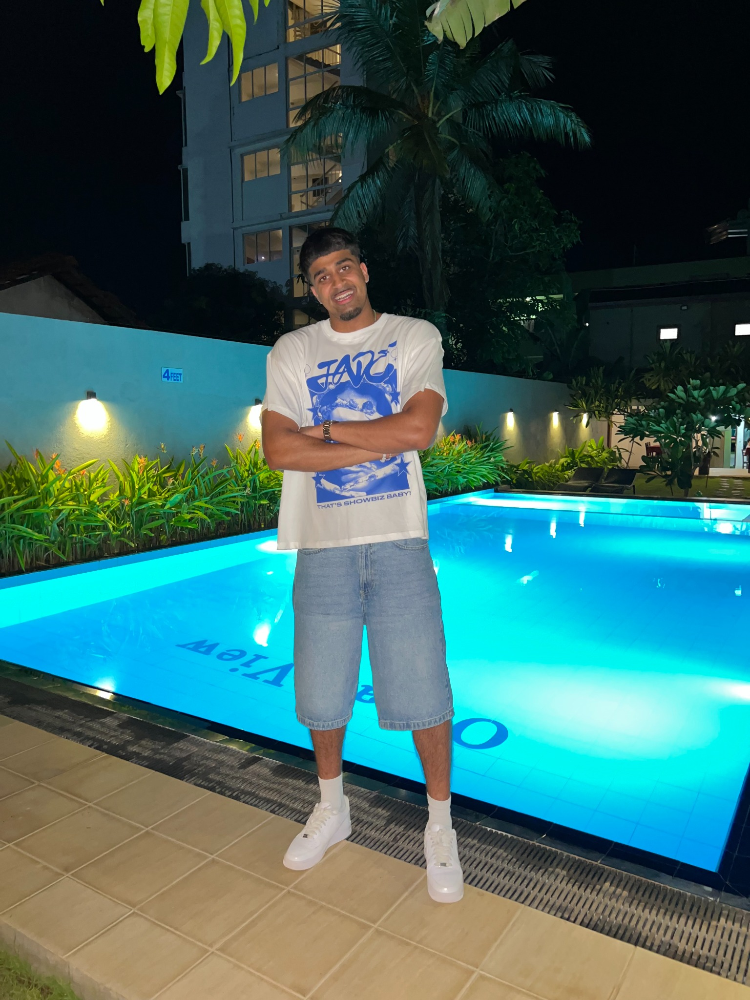
Medical Student · Newcastle University
School taught me the content, but not always how to get the 9. For three years, I’ve been tutoring GCSE Biology, Chemistry and Maths, teaching students the tips, tricks and exam techniques I wish I’d known myself. From time-saving shortcuts to the details that make answers stand out, I want to give students a blueprint for working smarter, not just harder.
I believe no subject is boring — it just hasn’t been made interesting enough yet. I love turning dreaded topics into “ohhh, I get it now” moments, with one goal: turning my students into academic weapons.
GCSE Biology, Chemistry and Mathematics · A-Level Biology, Chemistry and Mathematics
Pharmacy · University of Nottingham · Biology · Chemistry · Physics
Hi, I’m Salman, currently studying Pharmacy at the University of Nottingham. Having recently completed my A-Levels, I understand how important clear, personalised support and a genuine understanding of difficult concepts are when aiming for top grades.
I’m keen to give students that support by breaking challenging topics into manageable steps and adapting explanations to how each student learns best. Recently, I supported a peer in A-Level Physics and helped them progress from a C to an A, which showed me just how rewarding tutoring can be.
Outside academics, I enjoy going to the gym, playing basketball, drawing and making origami.
Clear explanations · Personalised support · Conceptual understanding · Exam preparation · Building confidence.
GCSE & A-Level Biology · Chemistry · Physics
Medical Student · Newcastle University · Maths · Biology · Chemistry · Physics
I have over two years of tutoring experience, working with students from Year 7 through to GCSE, A-Level and IB. I’ve supported students in making significant academic progress, including achieving strong GCSE results, progressing to grammar schools for sixth form and meeting — or exceeding — the grades needed for university.
I particularly enjoy teaching Maths and the three sciences: Biology, Chemistry and Physics, which are the subjects I have the most tutoring experience in. I can also support English. My aim is to build strong relationships with students, make difficult content easier to understand and give families confidence that each lesson is focused, worthwhile and tailored to the student's goals.
2+ years · Year 7 through GCSE, A-Level and IB · Experience supporting students with exam preparation, sixth-form progression and university grade requirements.
Mathematics · Biology · Chemistry · Physics · English
Medicine · Newcastle University · GCSE Maths · Biology · Chemistry · UCAT
I am a medical student at Newcastle University with a strong academic background and over three years of tutoring experience. I particularly enjoy tutoring GCSE Maths, Biology and Chemistry, as well as helping students prepare for the UCAT.
I achieved a UCAT score of 2650 and achieved 9 A*s at GCSE, including Maths and all three Sciences. At A level, I achieved three As in Maths, Biology and Chemistry.
I enjoy making difficult topics easier to understand by breaking them down into simple, manageable steps. My aim is to build students’ confidence while helping them achieve their academic goals.
Breaking down difficult topics · Clear, manageable explanations · Building confidence · Academic goal-setting · UCAT preparation.
GCSE Maths · Biology · Chemistry · UCAT
Learn more about our Lead Academic, Manager and KS3 Representative & Lead Coordinator.
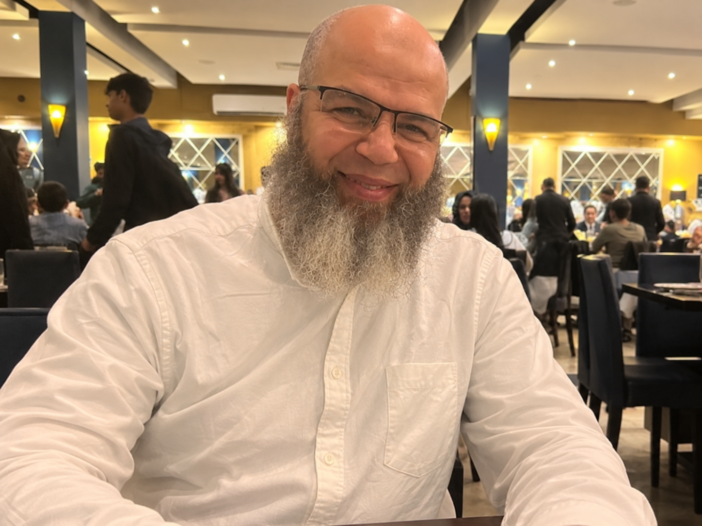
Chairman & Lead Academic, Trojan Tutoring
I am Dr Rachid Tazi, a medical professional with extensive experience across clinical practice, medical education and university admissions.
I have been directly involved in interviewing and assessing medical applicants, giving me a unique insight into what medical schools look for beyond academic achievement. I understand the qualities, communication skills, critical thinking and professionalism that distinguish a strong candidate at interview.
My passion for supporting aspiring doctors became particularly personal when I helped my son navigate the medical school admissions process. Through structured preparation and guidance, he successfully secured interviews at all four medical schools he applied to and went on to receive offers from all four — achieving a 4/4 success rate.
This experience reinforced my belief in the value of personalised, expert interview preparation. At Trojan Tutoring, I now want to use my experience and insight to help other aspiring medical students approach their interviews with the same confidence, preparation and understanding of what interviewers are looking for.
My aim is to give every candidate the knowledge, guidance and confidence to maximise their potential and, ultimately, secure their place at medical school.
Dr Rachid Tazi is an experienced medical academic, researcher and educator with more than three decades of experience across medical education, scientific research and university admissions. He has taught and conducted research at the University of Sheffield Medical School, with expertise spanning molecular biology, genetics, immunology and dermatological research, and has contributed to more than 100 scientific publications in internationally recognised journals.
Alongside his academic and research career, Dr Tazi has extensive experience in medical admissions. At the University of Sheffield, he served on the Medical Student Interviewing Panel and interviewed hundreds of prospective medical students alongside medical and scientific academics and student representatives, giving him first-hand insight into the communication, professionalism, reasoning and personal qualities assessed at interview.
At Trojan Tutoring, he brings this academic and admissions experience directly into medical interview preparation. His approach focuses on MMIs, communication, ethical reasoning, empathy, critical thinking and helping candidates use their own experiences effectively, so they understand what interviewers are assessing and can approach their interviews with greater confidence and structure.
The programme begins with a comprehensive introductory session covering the MMI format, including the structure, expectations and most common themes encountered across medical school interview stations.
It is important to recognise that MMI stations can vary between medical schools and may change from year to year. However, there are several core themes and station types that are commonly assessed across UK medical schools. These form the foundation of our preparation programme.
Subsequent sessions are fully personalised to each candidate, using their CV, experiences, achievements and individual strengths as a basis for preparation. Candidates will learn how to draw upon their own experiences and effectively apply them to a wide range of MMI scenarios.
The number of sessions required will depend on the individual candidate, their experience and the medical schools they are applying to. For most candidates, three to four focused sessions should provide comprehensive preparation, with additional sessions available where required.
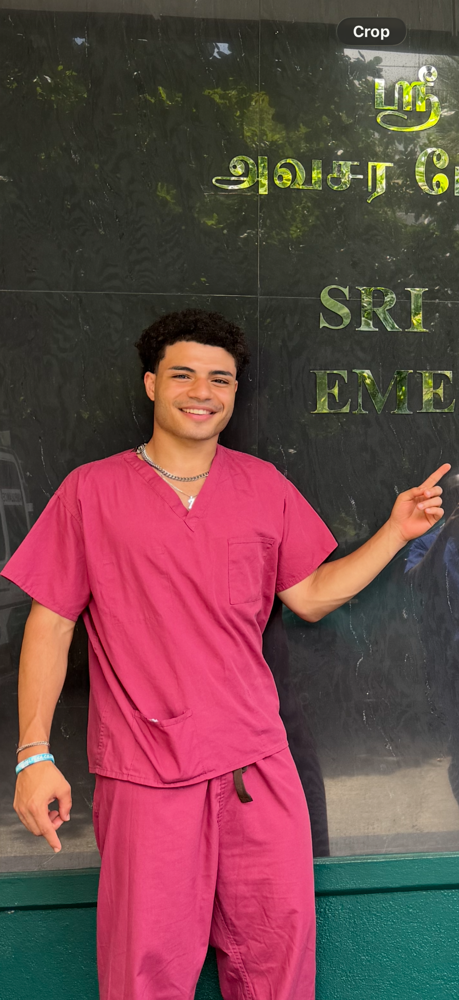
Manager, Trojan Tutoring · Second-Year Medical Student
My journey into Medicine was far from straightforward, and it is a huge part of why I created Trojan Tutoring.
After working hard throughout school and navigating the medical school application process largely on my own, I eventually secured four medical school interviews and an offer. Unfortunately, I missed the required grades.
Rather than giving up, I explored alternative pathways into Medicine and continued working towards my goal. I eventually took part in a structured preparation programme that helped me strengthen my application, approach interviews with greater confidence and understand what medical schools were looking for. That programme helped me secure 4/4 Medicine offers.
Looking back, I wish I had someone who could have told me what opportunities were available, what I needed to do, and how to approach the process from the very beginning. I didn't have the same opportunities, guidance or insight that many students have access to today, and I often had to figure things out for myself.
That is a major reason I created Trojan Tutoring.
I want to give students the guidance I wish I had received — whether that's support with GCSEs, A-Levels, UCAT, Medicine and Dentistry applications or interviews.
I know first-hand that the journey isn't always straightforward. Sometimes you simply need someone to show you the opportunities, help you understand the process and tell you what to do next.
At Trojan Tutoring, that's exactly what we aim to provide.
Outside of Medicine and Trojan Tutoring, I’m someone who likes to stay active and make time for the people and experiences that matter to me. I’m a big football fan and a proud Barcelona supporter, and I also enjoy running, boxing and swimming. I’m naturally competitive, so I’m usually happiest when I have something new to work towards or improve at.
I also love travelling and experiencing different places and cultures. Luxembourg is one of my favourite places I’ve visited, and I’m nearly always thinking about where I’d like to go next. Family and friends are a huge part of my life too, and spending time with them helps me keep a healthy balance alongside studying and running the business.
More than anything, I enjoy learning, trying new things and setting myself new challenges. I think working hard is important, but so is enjoying the journey and having interests outside academics — something I encourage our students to remember as well.
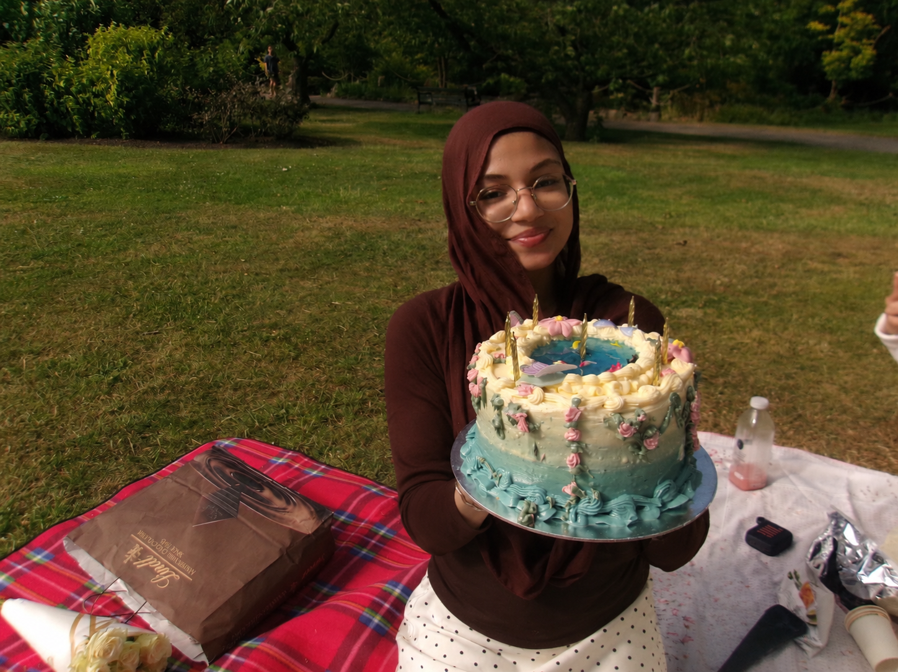
KS3 Representative & Lead Coordinator · Pharmacy Student
Over the last two years of teaching KS3 students, I have come to realise just how important these years are in a child’s education. This is often the stage where confidence is built, students begin to understand their own learning styles, and their attitudes towards different subjects start to develop. Sometimes, all a student needs is that extra push or for a difficult concept to be explained in a different, more interactive and engaging way.
At Trojan Tutoring, our focus goes far beyond A-Levels and Medicine and Dentistry interview preparation. We place just as much importance on supporting our younger students because we recognise that KS3 forms the foundation for everything that follows. Building confidence, strong study habits and a genuine understanding of key concepts early on can make the transition into GCSEs and A-Levels far less daunting.
That’s why we support all KS3 year groups, recognising that every year brings new challenges and opportunities for growth. Our aim is not simply to help students achieve better grades today, but to give them the confidence, knowledge and academic foundations to flourish throughout the years ahead.